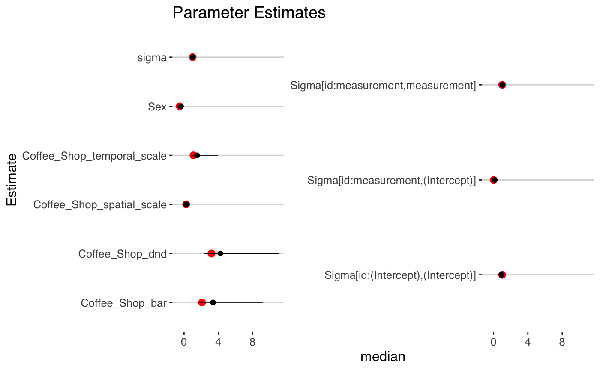

stap_dnd_lmer.RmdSpatial-temporal aggregated predictor (STAP) models can be used in a longitudinal setting to model within and across subject differences by including subject specific means and subject differences from means. These difference in differences models can have a causal interpretation if certain assumptions are met. In a standard regression modeling framework, this would require a simple transformation of the time-varying confounders. For STAP models, since the variables being centered are random, they must be manipulated within each iteration of the sampler, requiring a different function and modeling syntax in rstap (as of v.1.1.0), which will be demonstrated in this vignette.
We’ll begin by loading the neccessary libraries
The data generation is similar to standard longitudinal simulation so we will omit the code here. It can be found on the Github site in the vignettes folder.
Note that we’ll generate the outcome under the difference in difference parameterization (see formula below) to make assessment of the parameters easy, and we’ll only include a subject specific intercept and slope, which rstap is currently limited to.
Consider the following model examining the average of some continuous outcome as a function of coffee shop exposure and confounders, conditional on latent subject covariates, \(b_i\)
\[ E[Y_{ij}|b_i] = \alpha + \Delta X_{ij}(\theta_s)\beta_{i,Coffee} + \bar{X}_{ij}(\theta_s)\bar{\beta}_{i,Coffee} + + Z_{1}\delta_{i,sex} + b_i + b_i*w_{ij} \] where \[ \Delta X(\theta_s) = \overbrace{\sum_{d\in\mathcal{D}} w_d(\frac{d}{\theta_s}) }^{X_{ij}(\theta_s)} - \underbrace{\sum_{j=1}^{n_i}\sum_{d\in\mathcal{D}} w_d(\frac{d}{\theta_s})}_{\bar{X}_{ij}(\theta_s)} \]
The \(\bar{X}_{ij}\) serves as an estimate of a given subject’s average exposure to coffee shops across all measurements, so that \(\Delta X_{ij}(\theta_s)\) represents the difference in “usual” exposure implying that \(\beta_{i,Coffee}\) represents the within subject difference of increased Coffee exposure on the outcome, while \(\bar{\beta}\) represents the difference across or between subjects for one unit increase in \(\bar{X}_{ij}(\theta_s)\), the average subject exposure.
We combine these two main effect estimates with standard, non time-varying confounders - only sex is used here - as well as random intercepts and slopes for each subject to account for correlation within subjects across measurements. Although one will also have to include other built environment features that may be often colocated with one another to truly remove all sources of confounding, requiring a lot of data, this model represents the best attempt one can make at estimating the causal effect of a built environment feature.
We’ll fit the model with priors that reflect our relative uncertainty about the spatial and temporal scales and place a fairly uninformative prior on the subject-specific variance. For information on how priors are set on the subject specific covariance, see the rstanarm vignette’s write up here. The functional form will be the same as the model under which it was simulated since this vignette is for exposition.
fit <- stapdnd_lmer(BMI ~ Sex + sap_dnd_bar(Coffee_Shop,wei) + (time|id),
subject_data = subj_df, ## names of datasets
distance_data = dists,## simulated above
subject_ID = 'id',
group_ID = "time",
prior_intercept = normal(location = 25, scale = 4, autoscale = F),
prior = normal(location = 0, scale = 3,autoscale=F),
prior_stap = normal(location = 0, scale = 3),
prior_theta = log_normal(location = 1,scale = 1),
max_distance = max(dists$Distance),
prior_covariance = decov(regularization = 1,concentration = 1,shape = 1,scale = 1),
chains = 2,
iter = 1000,
cores = 2)We can now check our model estimates and see how they compare to the true values.
fit
#> stapdnd_lmer
#> family: gaussian [identity]
#> formula: BMI ~ Sex + sap_dnd_bar(Coffee_Shop, wei) + (time | id)
#> observations: 240
#> Intercept: TRUE
#> fixed predictors: 1
#> spatial predictors: 1
#> temporal predictors: 0
#> spatial-temporal predictors: 0
#> ------
#> Median MAD_SD
#> (Intercept) 21.8 1.1
#> Sex -0.4 0.4
#> Coffee_Shop_dnd 1.2 0.0
#> Coffee_Shop_bar 0.7 0.2
#> Coffee_Shop_spatial_scale 0.5 0.0
#> Coffee_Shop_spatial_shape 3.5 0.6
#>
#> Auxiliary parameter(s):
#> Median MAD_SD
#> sigma 1.0 0.1
#>
#> Error terms:
#> Groups Name Std.Dev. Corr
#> id (Intercept) 1.15
#> time 0.83 0.11
#> Residual 0.96
#> Num.levels: id 80
#>
#> Sample avg. posterior predictive distribution of y:
#> Median MAD_SD
#> mean_PPD 25.8 0.2
#>
#> ------
#> * For help interpreting the printed output see ?print.stapreg
#> * For info on the priors used see ?prior_summary.stapreg
Below we can see the estimate of the spatial exposure function along with several draws from the posterior.
More information on the parameterization of this model from an academic and technical perspective can be found in:
while the underlying fundamentals of the difference in differences model and its causal interpretation can be found in more lay-accessible book, “Mastering ’Metrics”, whose citation is below.